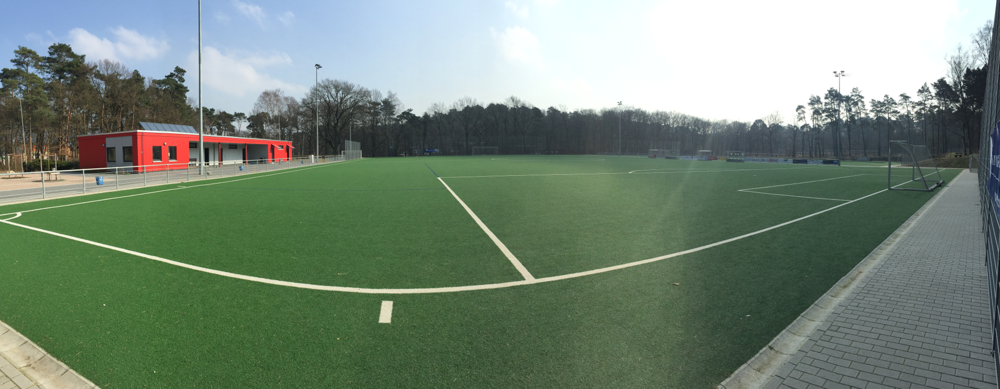

Gegründet 1918, sind wir mehr als nur ein Fußballclub.
⭐ Unser Vereinsheim! Ein Traum wurde wahr. ⭐
Herzstück ist der Sportpark Jägerhof.
Talweg 1, 21149 Hamburg
Tel.: 040-87933999
Alle Ergebnisse: fussball.de
„Moin, moin! Hier spricht Euer Schiedsrichterobmann Torsten Schümann.“
Unser Verein wächst – wir brauchen dringend Schiedsrichter/innen!
Jetzt melden! FTSV Altenwerder e.V.
Sportpark Jägerhof, Talweg 1, 21149 Hamburg
040-87933999
info@ftsv-altenwerder.de